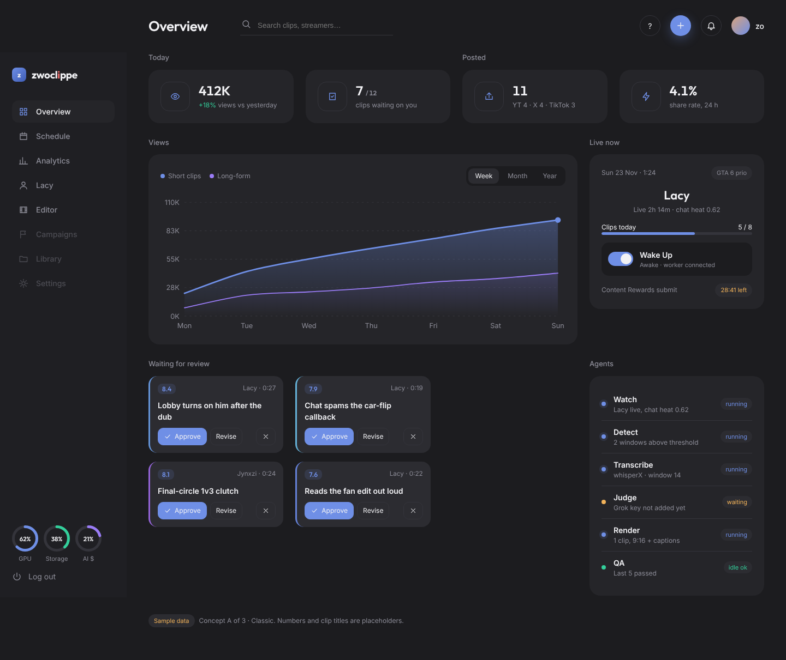
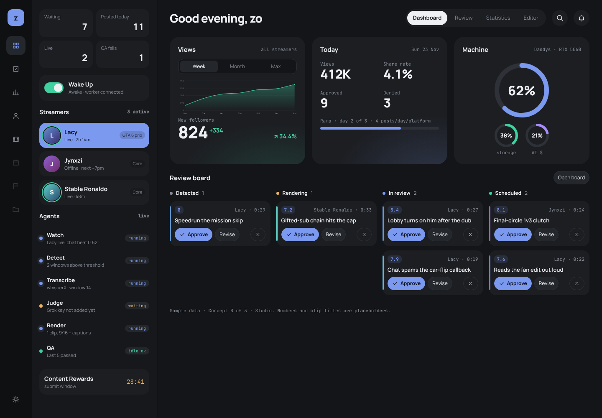
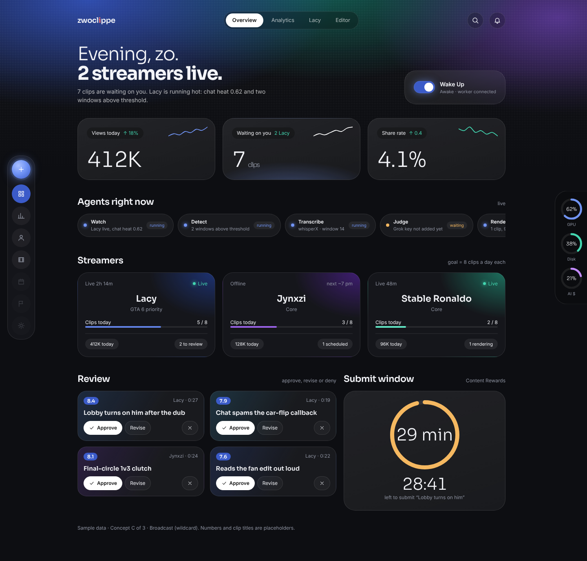

Zwoclippe dashboard, three directions
Each concept has the same four working pages: Overview, Analytics (Growth, Money, Pipeline), Lacy, and Editor. All three use a lighter navy instead of the reference's orange. In the editor you can drag the trim handles, playhead and crop box, edit the headline, and press play.

Close to referenceA · Classic
The Dashnect shell almost as-is. Calm, familiar, roomy.
- Text sidebar with machine rings in the footer
- Schedule page uses the Timeline pills
- Three-pane editor with Media, Audio and Text tracks
Open Classic

Close to referenceB · Studio
Built for working the queue. Streamers and agents are always visible on the left.
- Icon rail plus streamer worklist column
- Review board in columns, like the Tasks page
- Tablet-style editor with Split, Detach audio, Duplicate, Trim
Open Studio

WildcardC · Broadcast
No sidebar. A floating dock, an aurora header and big light numbers.
- Glowing + button opens New clip, Import VOD, Upload
- Ring dock on the right edge for GPU, disk and AI spend
- Full-stage editor with floating panels
Open Broadcast